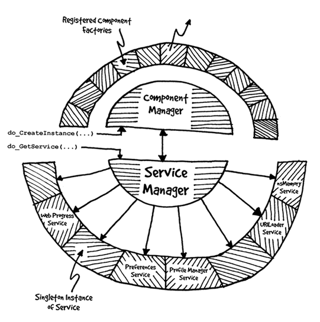
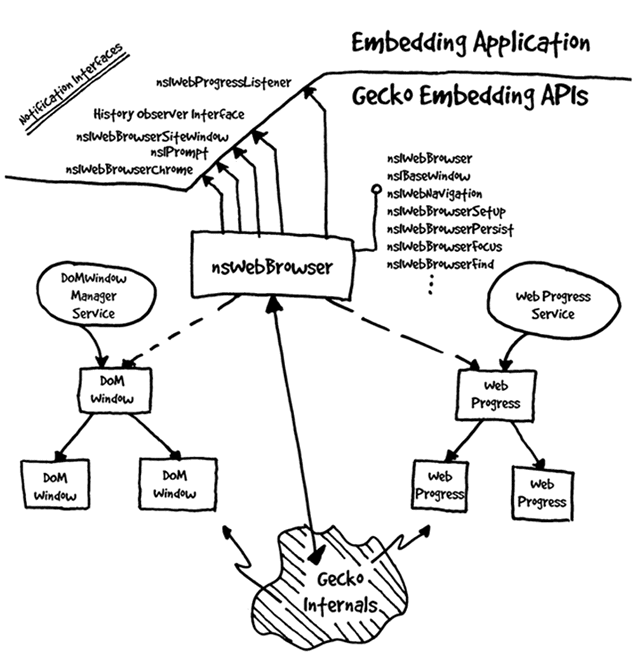
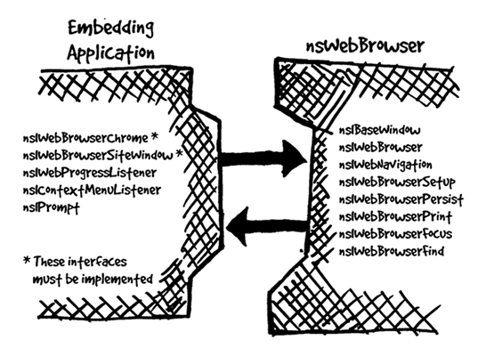

Introduction
The Mozilla Public API consists of a collection of services and components which are accessed via XPCOM interfaces. Mozilla's XPCOM layer consists of a component model (called XPCOM) and the infrastructure necessary to support dynamic registration, instantiation and manipulation of XPCOM components.
At the heart of XPCOM's implementation is the Service Manager and the Component Manager. Together, these two services provide a centralized point for gaining access to all of the public Mozilla interfaces.
The Service Manager exposes all of the available XPCOM services - each service represents a global object which provides some piece of functionality. The Component Manager allows new instances of registered XPCOM components to be instantiated.

The embedding layer consists of several components built on top of XPCOM
and its services. Much of the Gecko functionality is exposed through a
component called the nsWebBrowser. Embedding applications can leverage this
component to easily access many of Gecko's features. Each WebBrowser instance
represents the "client-area" of a typical browser window. The WebBrowser
exposes a set of interfaces which allow the embedding application to control
activity and respond to changes within this client area. Using these
interfaces an embedding application can build up its own user interface
around a WebBrowser instance.

Public Classes
The following utility classes are available from the XPCOM DLL. They provide some basic functionality which should be leveraged when building new XPCOM components.
nsCOMPtr<interface-type>
These are templatized smart pointers which transparently deal with XPCOM reference counting issues. See the nsCOMPtr User's Manual for more information.
nsString
There are a collection of string classes which support both unicode and ASCII strings. These classes provide a variety of string operations as well as dealing with the memory management issues of storing the underlying data. See the String Guide for more details.
nsWeakPtr
This is an nsCOMPtr which encapsulates XPCOM weak reference support. See the nsIWeakReference document for more information.
Public Return Codes
NS_SUCCEEDEDNS_ERROR_FAILURENS_ERROR_NOT_IMPLEMENTED
Public Functions
The following functions are available from the XPCOM DLL.
-
NS_InitEmbeddingThis function initializes the Gecko embedding support. This must be the first function call made into Gecko.
-
NS_TermEmbeddingThis function shuts down Gecko and cleans up any remaining resources... Currently, once Gecko has been shutdown, it cannot be restarted in the same process space... This should change in the future.
-
nsMemorynsMemory::AllocnsMemory::ReallocnsMemory::Free
NS_GetGlobalComponentManager
This function returns an instance of the Component Manager service.-
NS_ConvertASCIItoUCS2This is a helper class which converts an ASCII string into a UCS2 string. Typically, instances of this class are stack allocated, and wrap ASCII arguments which must be converted into UCS2.
do_QueryInterface
This is a helper class which works in conjunction with nsCOMPtr to perform a simplified call tonsISupports::QueryInterface(...)with a typesafe assignment.-
do_GetInterfaceThis function simplfies retrieving interfaces via the
nsIInterfaceRequestor::GetInterface(...)method. Using this function, one can use nsISupports instances and still easily access other interfaces via nsIInterfaceRequestor.Internally, this function tries to convert the nsISupports argument into an nsIInterfaceRequestor and then calls
GetInterface(...)to retrieve the requested interface. -
do_QueryReferentThis function is the equivilent of
do_QueryInterfaceexcept that it performs the QI through a weak reference. -
do_GetServiceThis function simplifies accessing services from the Service Manager.
do_CreateInstance
This function simplifies creating new component instances.-
nsCOMTypeInfo<interface-type>::GetIID()This template helper class allows easy access to an interface's nsIID. Typically the
NS_GET_IID(...)macro is used instead of using thensCOMTypeInfotemplate directly. -
NS_GetWeakReferenceThis function creates a weak reference to a component which implements the nsIWeakReference interface.
Global Services
nsServiceManager
The Service Manager is the central repository for accessing instances of the various XPCOM services. Each service is represented by a singleton object which is instantiated the first time it is requested and remains alive until the Service Manager is shut down, or the service is explicitly unloaded.
Through the Service Manager, individual services can be loaded, unloaded and accessed.
Implemented Interfaces:
Related Interfaces:
nsMemory
The nsMemory service provides the global memory manager implementation for XPCOM. In addition to memory allocation and release, this service provides low memory notifications, called a memory pressure observers, which are notified when memory is low - thus allowing cached resources to be freed.
All heap access should be done via the nsMemory service. To facilitate this, a set of global functions are available to access the nsMemory methods without requiring an instance of the nsMemory service (see nsMemory.h).
Contract-id:
NS_MEMORY_CONTRACTID
Implemented Interfaces:
Related Interfaces:
nsComponentManager
The nsComponentManager service is responsible for creating new instances of XPCOM components. The Component Manager is also responsible for registering and managing the class factories used for component creation...
Contract-id:
NS_COMPONENTMANAGER_CONTRACTID
Implemented Interfaces:
Requestor Interfaces:
Related Interfaces:
nsURILoader
The nsURILoader service is responsible for targeting a URI at an appropriate content handler. A content handler may be an existing or new window, a helper application or the Unknown Content Handler - if no other handler can be found for the content-type.
Contract-id:
NS_URI_LOADER_CONTRACTID
Implemented Interfaces:
Related Interfaces:
nsUnknownContentTypeHandler
The UnknownContentTypeHandler service is the last resort of the URILoader when no other content handler can be located. If no registered content handlers are available, the UnknownContentTypeHandler is notified.
The default implementation of this service displays a dialog box asking the user if the content should be saved to disk...
Contract-id:
NS_IUNKNOWNCONTENTTYPEHANDLER_CONTRACTID
Implemented Interfaces:
HelperApp Launch Dialog
Contract-id:
NS_EXTERNALHELPERAPPSERVICE_CONTRACTID
Implemented Interfaces:
Preferences Service
The Preferences service provides access to persistent data stored within a user's profile directory.
Contract-id:
NS_PREF_CONTRACTID
Implemented Interfaces:
Related Interfaces:
Profile Manager Service
Contract-id:
Implemented Interfaces:
Document Loader Service (WebProgress)
Eventually, this service will be replaced by theWebProgress service...
Contract-id:
NS_DOCUMENT_LOADER_SERVICE_CONTRACTID
Implemented Interfaces:
nsIWebProgressnsIDocumentLoader
Related Interfaces:
Public Components
nsWebBrowser
The nsWebBrowser is the main embedding component which Gecko exposes. Conceptually, each nsWebBrowser instance represents a HTML content area.
Conceptually, for each document being rendered, Gecko creates a container called a DOMWindow. Each WebBrowser exposes a tree of DOMWindows - representing the frame hierarchy for the current document. As such, access to individual document frames is done via the DOMWindow interfaces. Manipulation of the entire document structure is done via the various WebBrowser interfaces.
Contract-id:
NS_WEBBROWSER_CONTRACTID
Implemented Interfaces:
nsIWebBrowsernsIWebNavigationnsIWebBrowserSetupnsIWebBrowserPersistnsIWebBrowserFindnsIWebBrowserPrintnsIWebBrowserFocusnsIBaseWindow
Requestor Interfaces:
nsIDOMWindownsIDOMDocumentnsIWebProgressnsIClipboardCommandsnsIPrompt
Related Interfaces:
nsIPromptnsIWebBrowserChromensIWebBrowserSiteWindownsIWebProgressListenernsIContextMenuListenernsIPrintOptions
Overview:
Most of Gecko's functionality is exposed through the nsWebBrowser component. The WebBrowser provides a simple mechanism for other applications to leverage Gecko functionality. Each instance of a WebBrowser encapsulates a full featured HTML content area.
The embedding application receives notifications from Gecko through a set of callback interfaces it may choose to implement.

Below is a code snippet which an embedding application can use to create and initialize a WebBrowser:
nsresult rv;
nsCOMPtr<nsIBaseWindow> baseWindow;
nsCOMPtr<nsIWebBrowser> webBrowser;
// Create a nsWebBrowser instance...
webBrowser = do_CreateInstance(NS_WEBBROWSER_CONTRACTID, &rv);
if (NS_FAILED(rv)) return rv;
// Give the WebBrowser a pointer to the embedding component which
// implements the callback interfaces. Replace 'this' with
// an appropriate object...
rv = webBrowser->SetContainerWindow((nsIWebBrowserChrome*)this);
if (NS_FAILED(rv)) return rv;
baseWindow = do_QueryInterface(webBrowser);
// Initialize the WebBrowser with a native parent window
// (ie. HWND on Win32). Replace 'nativeWindow' with a
// reference to an appropriate native resource...
rv = baseWindow->InitWindow(nativeWindow, // Native
window
nsnull, // Always nsnull.
x, y, cx, cy); // Initial dimensions...
if (NS_FAILED(rv)) return rv;
// Create the child window for the WebBrowser.
rv = baseWindow->Create();
if (NS_FAILED(rv)) return rv;
// At this point webBrowser contains the new initialized instance
// of the nsWebBrowser component...
// Save webBrowser before it goes out of scope :-)
Web Navigation
The nsIWebNavigation interface is used to load URIs into the
WebBrowser and provide access to session history capabilities - such as back
and forward.
Clipboard
The WebBrowser exposes access to the system clipboard via the
nsIClipboardCommands interface. This interface supports
cut/copy/paste operations on the current selection within the WebBrowser
window.
Printing (not yet implemented)
Printing the contents of a DOMWindow within a WebBrowser is a two step
process. First, the printer and page options are collected via the
nsIPrintOptions interface. On most platforms this involves
displaying a native Print dialog box. Once all of the options have been set,
the nsIWebBrowserPrint interface is used to print the contents
of the desired DOMWindow.
Searching
Searching within a nsWebBrowser is controlled via the
nsIWebBrowserFind interface. The search is always performed
within the DOMWindow which currently has the focus.
Focus Management
Focus managment within the WebBrowser is accessed via the
nsIWebBrowserFocus interface.
This interface serves two purposes. First, it provides methods for the embedding application to notify a WebBrowser of activation/deactivation and to control tabbing order... This interface also allows access to the currently focused DOMWindow and DOMElement.
Context Menu notifications
Right-click context menu notifications are passed up to the embedding
application through the nsIContextMenuListener interface. These
notifications allow the embedding application to display context menus based
on user activity within the WebBrowser (such as a right-click on a hypertext
link).
Saving Documents
Notification Interfaces which the embedding application should implement
nsFile
Public Interfaces
nsISupports
Base Component Object Model interface. This interface provides runtime interface discovery and a reference counted memory model fashioned after the Microsoft COM IUnknown interface. More...
Interface status... none
Interface definition: nsISupportsUtils.h
nsIInterfaceRequestor
This Interface provides an interface discovery mechanism which does not imply aggregation. More...
Interface status... none
Interface definition: nsIInterfaceRequestor.idl
nsIWeakReference
This interface is used to retern a proxy reference to a component. More...
Interface status... being reviewed
Interface definition: nsIWeakReference.idl
nsISimpleEmunerator
This interface provides a simple enumeration abstraction. More...
Interface status... being reviewed
Interface definition: nsISimpleEnumerator.idl
nsIServiceManager
This interface allows access to global services within mozilla. More...
Interface status... none
Interface definition: nsIServiceManager.h
nsIShutdownListener
This interface is used to receive notifications when the Service Manager is being shutdown. More...
Interface status... none
Interface definition: nsIServiceManager.h
nsIComponentManager
This interface allows new instances of registered XPCOM components to be instantiated. More...
Interface status... none
Interface definition:
nsIComponentManager.idl
nsIFactory
This interface is used by the Component Manager to create new instances of a particular XPCOM component. Each component must provide a factory implementation for creating new instances. More...
Interface status... none
Interface definition: nsIFactory.idl
nsIMemory
This interface provides access to the global memory management functionality.More...
Interface status: being reviewed
Interface definition: nsIMemory.idl
nsIDOMWindow
This interface is used to represent the window containing a specific document. More...
Interface status... being reviewed
Interface definition:
nsIDOMWindow.idl
nsIBaseWindow
This interface provides access to various window operations. More...
Interface status... being reviewed
Interface definition: nsIBaseWindow.idl
nsIRequest
This interface provides a means to control various operations. More...
Interface status... being reviewed
Interface definition: nsIRequest.idl
nsIWebBrowser
This is the primary interface to the WebBrowser component More...
Interface status... being reviewed
Interface definition: nsIWebBrowser.idl
nsIWebBrowserSetup
This interface is used to enable or disable various capabilities of a nsWebBrowser instance. More...
Interface status... being reviewed
Interface definition: nsIWebBrowserSetup.idl
nsIWebBrowserChrome
This interface provides access to the window containing an nsWebBrowser instance. More...
Interface status... being reviewed
Interface definition: nsIWebBrowserChrome.idl
nsIWebNavigation
This interface exposes the web navigation functionality of the nsWebBrowser component. More...
Interface status... being reviewed
Interface definition: nsIWebNavigation.idl
nsIWebBrowserPersist
This interface exposes the save-as functionality of the nsWebBrowser component. More...
Interface status... being reviewed
Interface definition:
nsIWebBrowserPersist.idl
nsIWebBrowserPrint
This interface allows printing of individual (or a collection of) DOM Windows within a nsWebBrowser component. More...
Interface status: being reviewed
Interfaced definition:
nsIWebBrowserPrint.idl
nsIWebBrowserFind
This interface exposes the searching capabilities of the nsWebBrowser component. More...
Interface status: none
Interface definition:
nsIWebBrowserFind.idl
nsIWebBrowserFocus
This interface provides access to the focus information of a nsWebBrowser instance. More...
Interface status: being reviewed
Interface definition: nsIWebBrowserFocus.idl
nsIWebProgress
More...
Interface status...
Interface definition:
nsIWebProgressListener
More...
Interface status...
Interface definition:
nsIPrompt
More...
Interface status...
Interface definition:
nsIPrefs
More...
Interface status...
Interface definition:
nsIProfile
More...
Interface status...
Interface definition:
nsIDirectoryServiceProvider
More...
Interface status...
Interface definition:
nsILocalFile
More...
Interface status...
Interface definition:
nsIFile
More...
Interface status...
Interface definition:
nsIClipboardCommands
More...
Interface status...
Interface definition:
nsISelection
More...
Interface status...
Interface definition:
nsIURILoader
More...
Interface status...
Interface definition:
nsIURIContentListener
More...
Interface status...
Interface definition: